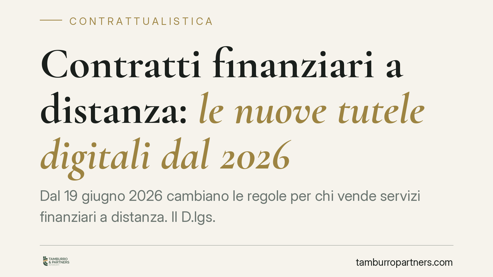

Contratti finanziari a distanza: le nuove tutele digitali dal 2026
Dal 19 giugno 2026 cambiano le regole per chi vende servizi finanziari a distanza. Il D.lgs. 209/2025 introduce un rafforzato diritto di recesso, un pulsante di cancellazione, il divieto dei cosiddetti dark pattern e garanzie sull'uso dell'intelligenza artificiale. Previste sanzioni fino a 75.000 euro. Per banche, intermediari e piattaforme fintech la revisione dei processi di vendita digitale diventa un adempimento ineludibile.

Il contesto
La vendita a distanza di servizi finanziari — conti, prestiti, polizze, prodotti di investimento sottoscritti online o via app — è cresciuta in modo stabile. Con essa è aumentato il rischio di contratti conclusi senza piena consapevolezza, favoriti da interfacce studiate per orientare la scelta dell'utente.
Il D.lgs. 209/2025 risponde a questa dinamica inserendo una nuova sezione II-bis nel Codice del consumo. L'obiettivo dichiarato è riequilibrare il rapporto tra consumatore e operatore nel canale digitale, dove la distanza fisica rende più difficile valutare appieno l'impegno assunto.
Inquadramento normativo
Il decreto recepisce la disciplina europea sui servizi finanziari conclusi a distanza e si applica dal 19 giugno 2026. Le disposizioni confluiscono nella sezione II-bis del Codice del consumo e interessano banche, intermediari finanziari, imprese assicurative e piattaforme fintech che operano con i consumatori.
I punti qualificanti sono quattro.
Primo, il diritto di recesso: il consumatore può sciogliersi dal contratto entro un termine che va da 14 a 30 giorni a seconda della tipologia di prodotto, senza dover indicare una motivazione.
Secondo, l'obbligo di un pulsante di cancellazione: dove il contratto è stato concluso online, il recesso deve poter essere esercitato con la stessa semplicità con cui è avvenuta la sottoscrizione. Niente percorsi a ostacoli.
Terzo, il divieto dei dark pattern, cioè quelle tecniche di progettazione dell'interfaccia (caselle pre-selezionate, pulsanti ingannevoli, messaggi che creano falsa urgenza) pensate per condizionare le decisioni dell'utente.
Quarto, le garanzie sull'uso dell'intelligenza artificiale nei processi di vendita e assistenza, con obblighi di trasparenza verso il consumatore.
La vigilanza è affidata alle autorità di settore — Banca d'Italia, Consob, Ivass e Covip — secondo le rispettive competenze. L'apparato sanzionatorio prevede importi da 7.500 a 75.000 euro.
Implicazioni pratiche
Per gli operatori l'impatto non è formale. Il pulsante di cancellazione impone una revisione dell'architettura dei percorsi digitali: se la sottoscrizione richiede pochi clic, altrettanto deve valere per il recesso. Molti flussi attuali, costruiti per trattenere il cliente, dovranno essere ripensati.
Il divieto di dark pattern obbliga a un esame critico delle interfacce esistenti. Elementi considerati standard nel marketing digitale — una casella già spuntata, un timer che segnala una scadenza inesistente — possono ora integrare una violazione.
Sul fronte dell'intelligenza artificiale, chi impiega sistemi automatizzati per la profilazione o l'assistenza deve essere in grado di documentarne il funzionamento e informarne l'utente. La tracciabilità delle decisioni algoritmiche diventa parte della compliance contrattuale.
Per il consumatore, la posizione si rafforza: più tempo per ripensare la scelta, un'uscita più agevole e maggiore trasparenza sui meccanismi che guidano la sottoscrizione.
Cosa fare in concreto
- Mappate i contratti a distanza attualmente offerti e verificate per ciascuno il termine di recesso applicabile e le modalità di esercizio previste.
- Introducete il pulsante di cancellazione nei percorsi digitali, assicurando che la procedura di uscita sia semplice quanto quella di sottoscrizione.
- Sottoponete le interfacce a un audit per individuare ed eliminare caselle pre-selezionate, messaggi di falsa urgenza e altri schemi riconducibili ai dark pattern.
- Documentate l'uso dei sistemi di IA nei processi di vendita e assistenza, predisponendo le informative dovute al consumatore.
- Aggiornate modulistica e condizioni generali per allineare il testo contrattuale alla nuova disciplina prima del 19 giugno 2026.
Consigliamo di avviare la revisione con anticipo: l'adeguamento dei flussi digitali richiede tempi tecnici che è prudente non comprimere a ridosso della scadenza.
Disclaimer
Contributo informativo a cura di Tamburro & Partners - Avv. Giuseppe Tamburro. Non costituisce parere legale.
Ogni contratto ha il suo equilibrio.
Se vuoi una revisione delle clausole o una redazione su misura, scrivi allo studio. Ti rispondiamo entro un giorno lavorativo.